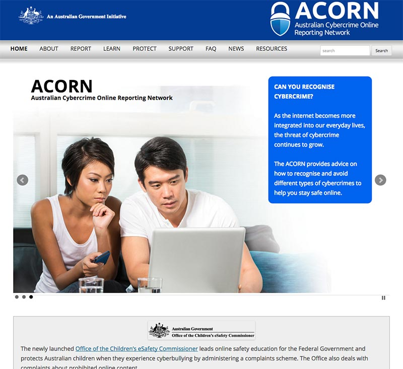

← Back to My Work


ACORN
The Australian Cybercrime Online Reporting Network was a project I worked on for CrimTrac. The main site is based on a very locked down version of Wordpress called GovSpace. The reporting part of the site was designed by myself.
Responsibilities
UI Design, Wireframing, High Fidelity Mockups, Wordpress development, UX Design
Technologies and Tools
Adobe Illustrator, Adobe Photoshop, HTML, CSS, Javascript
Links
ACORN Live Homepage
ACORN Live Learn Page
ACORN Live 'Report a Cybercrime' Page
ACORN Live 'Report a Cybercrime' Process Page